Zurich Benefits Club is a wellbeing app that connects employers and employees. With nearly half of the UK population experiencing loneliness, affecting careers, health, relationships, and overall wellbeing, the app addresses a critical gap. I led a team of three designers to develop the project from the ground up.
Overview
Zurich Benefits Club is a wellbeing app that connects employers and employees. With nearly half of the UK population experiencing loneliness, affecting careers, health, relationships, and overall wellbeing, the app addresses a critical gap.
I led a team of three designers to develop the project from the ground up.
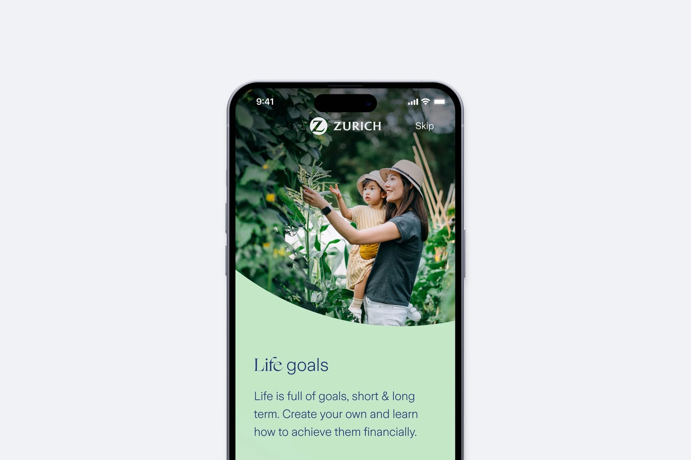
Context
Loneliness hinders employee progress towards their goals in addition to barriers they already face like multiple competing priorities and fear/shame of being judged. Most well-being apps, which are typically paid, target specific issues or activities and require prior motivation to even begin.
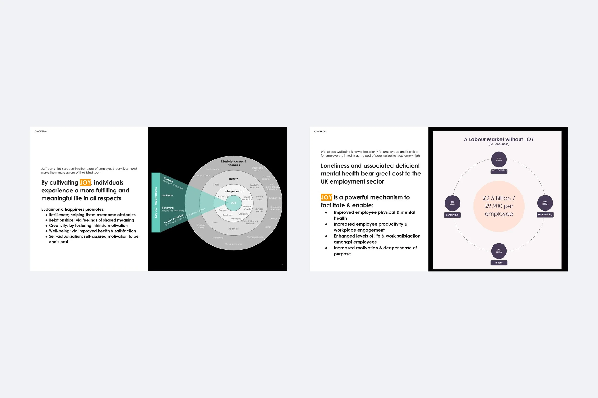
Key insights from research
71%
Of UK employees need to find meaning & fulfillment in their professional lives meanwhile 31% have difficulty changing the course of events that affect them.
85%
Of UK employees goals were focused on finances + retirement & lifestyle + material.
£2.5B
From an employer perspective loneliness costs £2.5B annually through turnover, reduced productivity, and absenteeism.
Goals
Feeling happy & at ease with oneself is perceived as the most difficult goal to achieve, with the longest time horizon.
Concepts testing
We designed two related but distinct concepts: one focused on personal life achievements and the other on financial milestones.
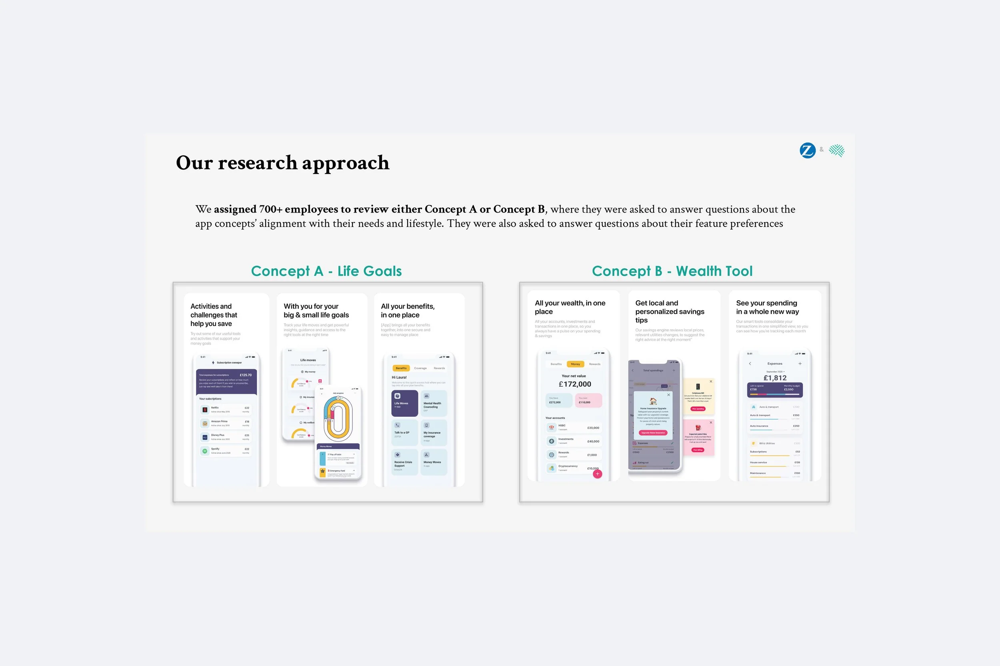
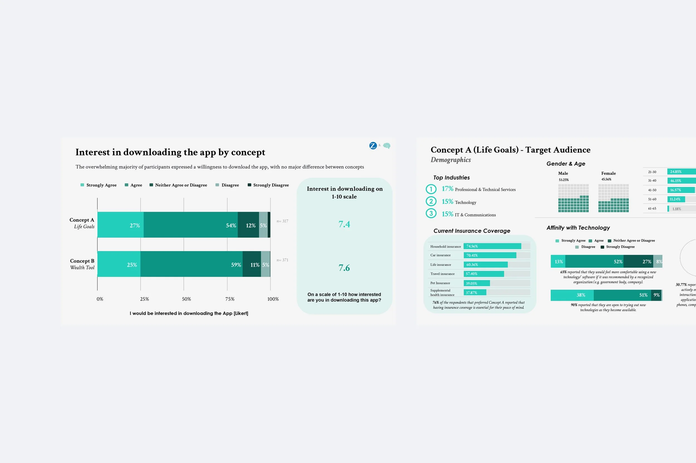
Benefits and Goals
For the MVP, we prioritized two key functionalities: Benefits, designed to support mental health, and Goals, designed to help users set and achieve realistic objectives. This feature connects users with trusted resources and services that provide guidance, emotional support, and professional help.
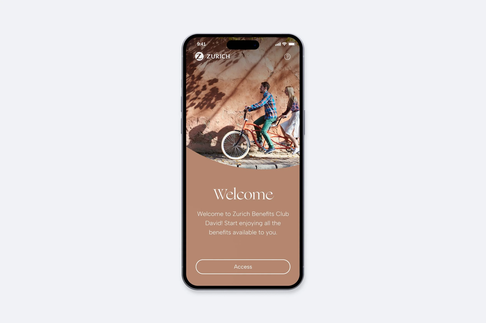
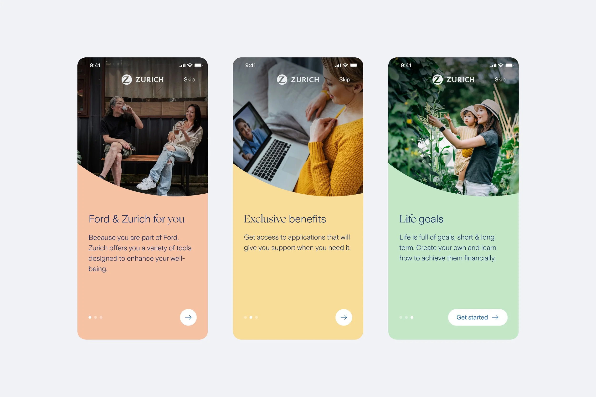
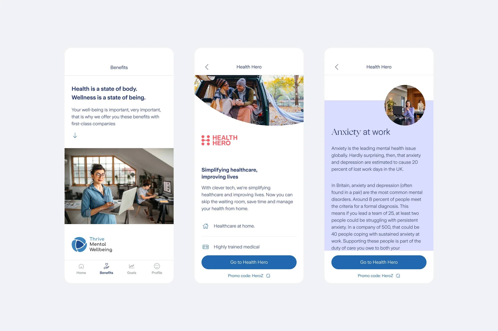
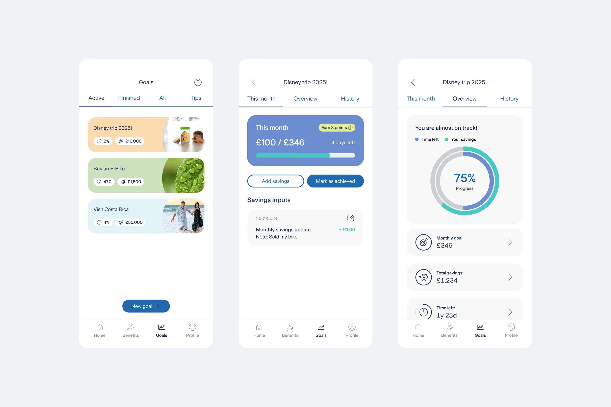
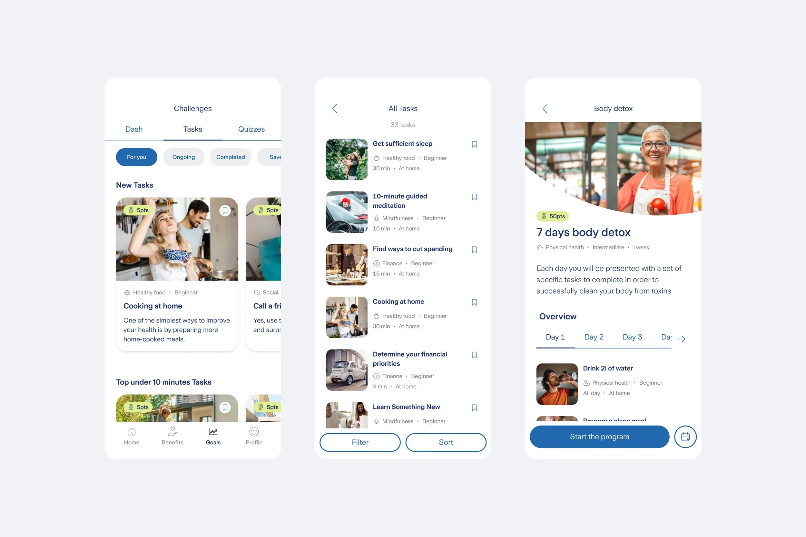
Carbon footprint calculator
By answering a few simple questions about energy use, transportation, and lifestyle habits, users receive a clear estimate of their carbon footprint, expressed in CO₂ equivalents.
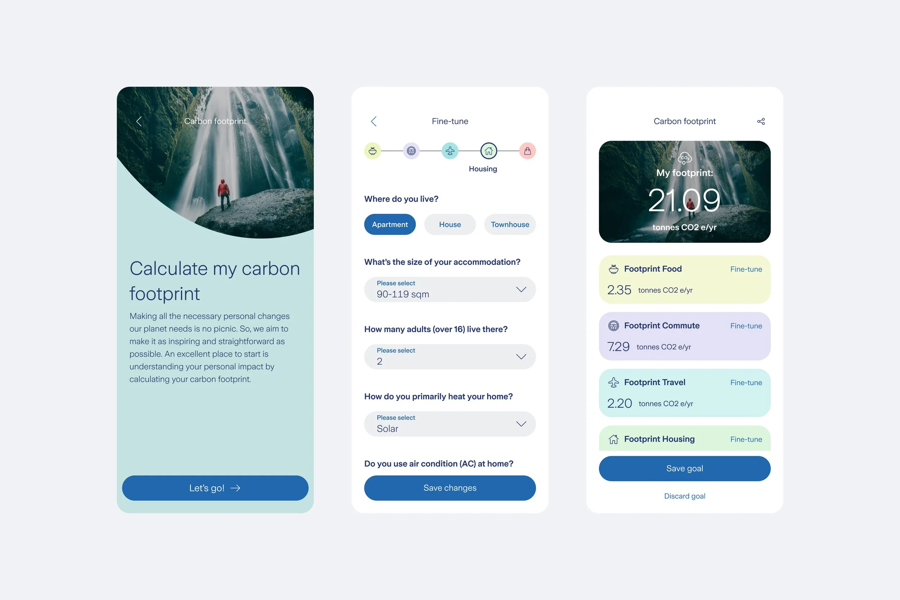
Points
Users earn points by completing activities and making responsible choices within the platform. These points can be collected over time and redeemed for vouchers, offering real, tangible benefits from trusted partner brands.
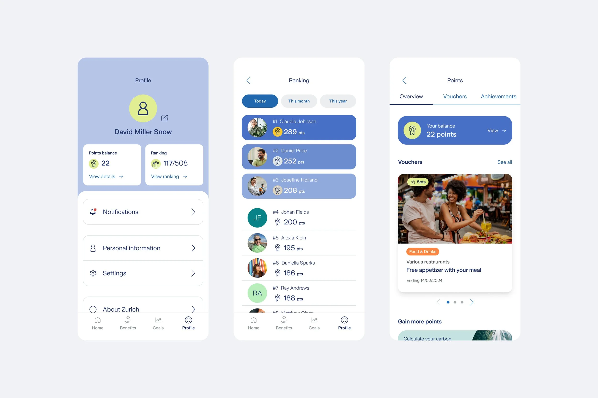
Quizzes
Through short and dynamic quizzes, users can test their knowledge, discover new insights, and reinforce key concepts in an enjoyable way.
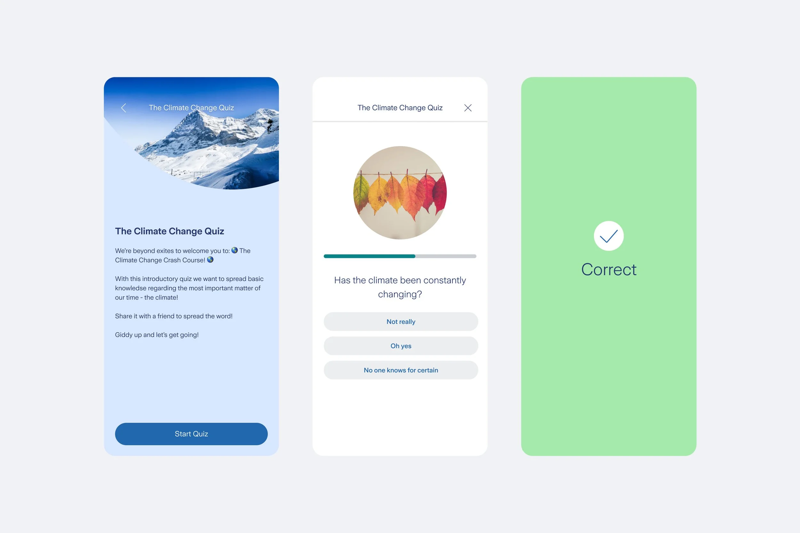
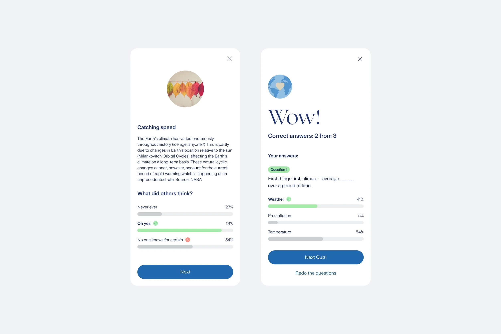
Lifestyle profile
Allows users to share key information about their habits, preferences, and routines. By uploading their lifestyle profile, users help personalize their experience across the platform.
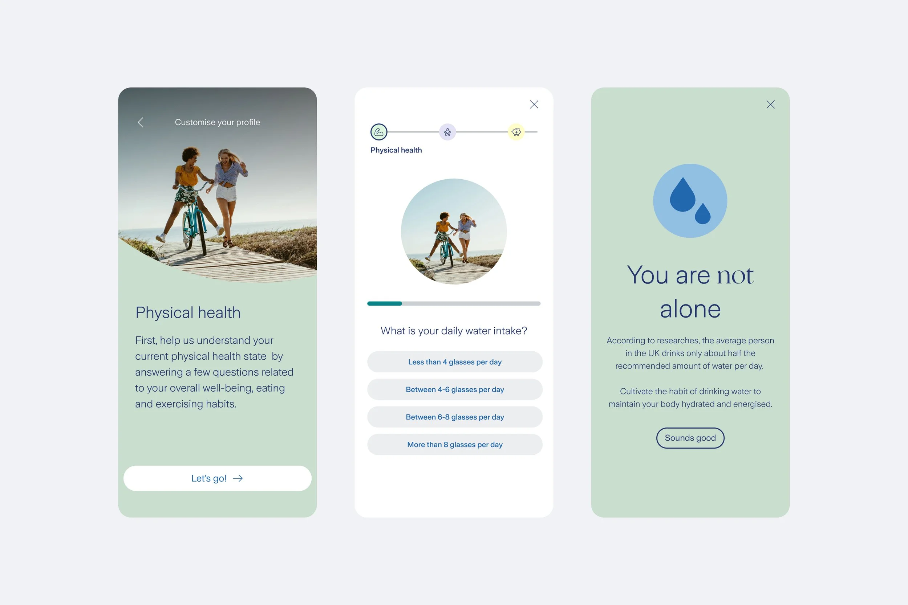
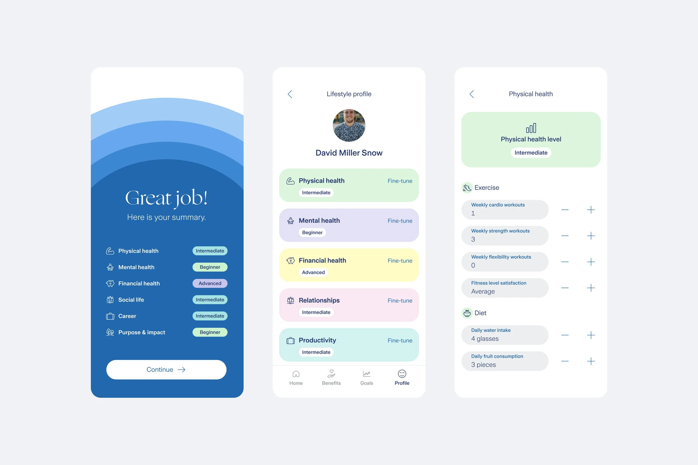
Conclusions
Working on an app that aims to help users with sensitive topics like mental health or lack of motivation has been truly rewarding. The research process, carried out together with a specialized agency, gave us an impressive amount of information — things we didn't even know were happening in society. Working as a team alongside business and clients was key to approaching sensitive topics in a warm, positive way.
Note: some data here has been adjusted for confidentiality and may not be fully exact.